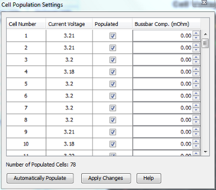

This window deals with specifying which cells are Populated, or active. An unpopulated cell is ignored by the BMS so it is important to only flag real cells as populated.
There are two settable parameters on this screen:
Populated: This checkbox is used to specify a cell as either Populated (checked) or Unpopulated (unchecked).
Bussbar Resistance (units in 0.01 mOhm): This parameter is used to set the amount of added resistance (if any) in 0.01 mOhm that the given cell has due to a bussbar or other high impedence link. Since the BMS reads cells in banks of 12 cells, there may be instances where an extended bussbar is needed within that 12 cell block. This provides a means to compensate out the additional resistance introduced by the longer wire. Small bussbars of 4 inches or less generally can be ignored.
There is an "Automatically Populate" button on this screen (that is enabled if the application is connected to the BMS) that allows for the BMS to intelligently determine which cells are populated based on which voltages read above 0v. Before pressing this button, make sure that all desired cells are plugged in.
NOTE: The Automatically Populate button is not guaranteed to always produce the correct population table. If a cell is accidentally unplugged, shorted, or is not wired properly this can cause invalid results. The population table should always be reviewed afterwards for correctness.
| < Nominal Cell Resistance | How Cell Balancing Works > |